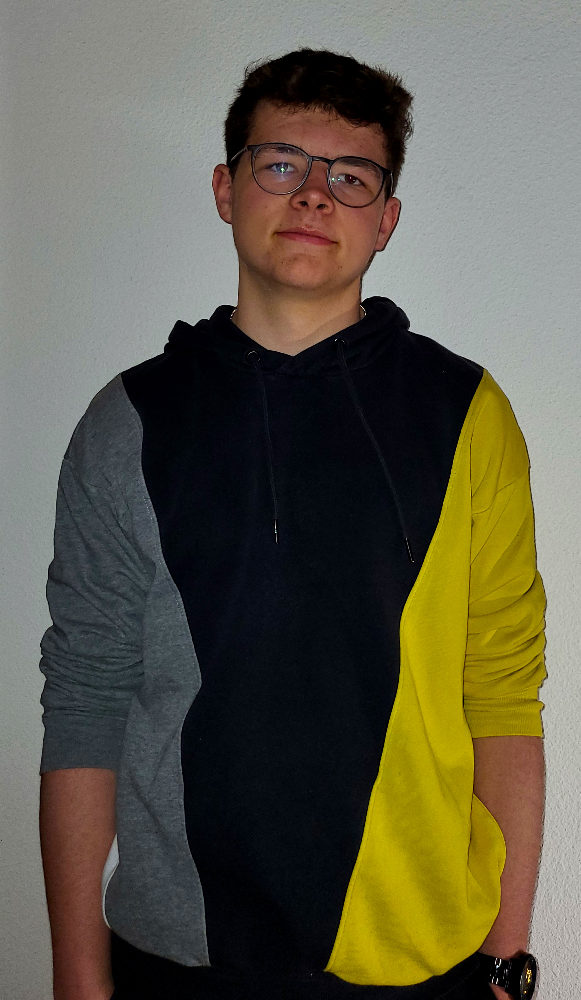

Yannik König
Yannik König is 18 years old. He was born in Titisee-Neustadt near Freiburg and raised in Feldberg. 2021 he finished school with the Abitur and stared studying Media Konzeption in Furtwangen by March 2022.
In Dezember 2020, he started filming short Videos for Tik Tok about the Coronavirus pandemic and vaccines. Later on he also covered politcs and climate chance as topics and reached thousands of people with his easy understandable videos about complex topics.
Currently, he is not activly producing new content but working on a re-branding and making the videos more professional.
Further question? Just use the contact form!